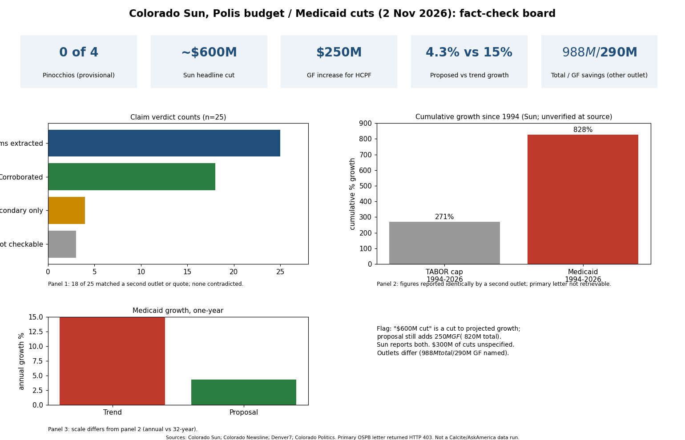

Of 25 claims extracted, 18 were corroborated, 4 only partly or only via secondary reports, 3 could not be checked, and none were contradicted. I grade the piece 0 Pinocchios (Geppetto) provisionally, because I could not open the primary budget letter (Governor's Office and Colorado Newsline returned HTTP 403, and the Sun page itself was only available as a summary).
| # | Claim | Verdict | Source |
|---|---|---|---|
| 1 | Proposes more than $600M cut to projected Medicaid spending | Supported as framing; ambiguous metric | Sun; Newsline $988M/$290M |
| 2-4 | Final request; state can't pay at current rate; $250M GF increase | Supported | Denver7, Newsline |
| 5 | $250M insufficient for existing services | Partly (Sun analysis; advocates concur) | Denver7 |
| 6 | Quote "Let no one say..." | Verbatim | Denver7 |
| 7 | About $300M identified cuts | Supported | Newsline ($290M GF) |
| 8 | Ends adult/senior dental | Partly (cap vs elimination conflict) | Newsline; Arcamax |
| 9,10,12,13 | In-home PT; Cover All Coloradans; teaching hospitals; behavioral prior auth | Supported | Denver7, Axios, States Newsroom |
| 11,14,25 | Pregnancy coverage kept; pediatric hospitals; tobacco/gambling measures | Not checkable here | none accessible |
| 15 | $300M+ unspecified cuts later | Supported | Search summaries; Substack $331M |
| 16 | >$900M projected increase | Partly (consistent, not seen) | Derived |
| 17 | No intent to remove people from Medicaid | Supported | Newsline quote |
| 18 | 1 in 5 Coloradans | Supported | Newsline; Colorado Access |
| 19 | JBC writes budget; Polis leaves January | Supported | Denver7 |
| 20 | 4.3% matches TABOR | Supported | Denver7 |
| 21 | 828% vs 271% since 1994 | Partly (secondary only) | Search summary |
| 22 | Advocate criticism; Amendment 87 | Supported | Denver7 |
| 23,24 | $488 per pupil; Huerfano reopening | Supported | Newsline |
Confidence medium: sources are secondary news outlets plus summaries from the fetch tool, which paraphrases rather than quoting. The primary letter was not readable. This was a web fact-check, not a data-warehouse query.